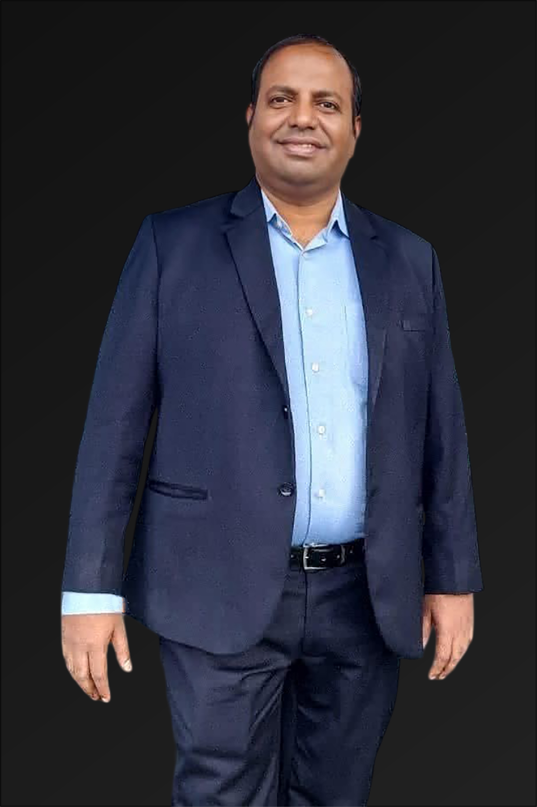

Chief Operating Officer (COO)

As the Chief Operating Officer (COO) of NeuroPi, Mr. MNR Gupta brings over 30 years of executive leadership in delivering large-scale infrastructure programmes, engineering operations, strategic planning, and organizational transformation across international markets. His distinguished career has been built upon successfully managing some of the Middle East's most prestigious infrastructure developments, including the world-renowned Sohar Port and Salalah Port projects in the Sultanate of Oman. These projects collectively represented infrastructure programmes valued at more than USD 46 billion, where he played a significant leadership role in planning, execution, stakeholder coordination, quality assurance, safety, and operational excellence.
His expertise spans programme management, infrastructure engineering, integrated transportation planning, logistics, operations management, enterprise governance, business transformation, and organizational leadership. Throughout his career, he has consistently delivered complex engineering projects within demanding international environments while maintaining world-class standards for quality, safety, schedule, and operational performance.
At NeuroPi, Mr. Gupta leads programme governance, operational strategy, project execution, stakeholder engagement, quality assurance, and organizational readiness, ensuring that the NeuroPi Industrial Intelligence Platform (NIIP) is delivered using globally recognized engineering and project management practices suitable for defence and mission-critical industries.
Mr. Gupta possesses more than 25 years of international infrastructure management experience, successfully leading multidisciplinary engineering teams responsible for the planning, execution, and operational management of large-scale infrastructure projects across the Middle East. His experience includes world-class port developments, integrated transportation planning, logistics infrastructure, and complex engineering ecosystems requiring coordination between government authorities, consultants, contractors, and international stakeholders.
Mr. Gupta held senior operational leadership responsibilities during the development of Sohar Port and Salalah Port in Oman—two internationally recognized infrastructure programmes that established new benchmarks for operational efficiency, logistics capability, and engineering excellence.
His responsibilities included:
His experience managing highly complex engineering programmes provides valuable operational insight into the governance and execution of large engineering projects similar in complexity to modern naval shipbuilding programmes.
Mr. Gupta has extensive expertise in:
These competencies directly support the structured implementation, governance, and operational deployment of the AI-Powered Digital Twin Sync System proposed for MDL.
Throughout his career, Mr. Gupta has contributed to infrastructure planning initiatives, transportation strategies, and engineering policy discussions at both national and international levels. He has represented government organizations in technical coordination meetings, delivered keynote presentations at international engineering conferences, participated in expert panel discussions, and collaborated closely with leading researchers, scientists, and engineering professionals on strategic infrastructure development.
Mr. Gupta has received numerous national and international honours in recognition of his contributions to infrastructure engineering, programme management, operational excellence, and leadership. Among the most notable are:
In addition to his infrastructure leadership, Mr. Gupta has successfully led entrepreneurial ventures in education, technology, and business development. His experience in scaling organizations, establishing operational frameworks, and managing multidisciplinary teams enables him to bridge engineering excellence with innovation-driven business transformation.
Within the AI-Powered Digital Twin Sync programme, Mr. Gupta is responsible for:
His operational leadership ensures that the project is delivered in accordance with agreed milestones, quality objectives, governance standards, and customer expectations while minimizing implementation risks.
The successful implementation of the AI-Powered Digital Twin Sync System requires disciplined programme management, engineering governance, stakeholder coordination, and operational leadership in addition to technological excellence.
Mr. MNR Gupta brings over three decades of international experience in leading large-scale infrastructure programmes, managing multidisciplinary engineering organizations, coordinating complex stakeholders, and delivering mission-critical projects within demanding operational environments. His leadership experience across world-class port infrastructure programmes, combined with his expertise in programme governance, quality management, operational excellence, and organizational transformation, makes him exceptionally well suited to oversee the successful execution and deployment of the NeuroPi Industrial Intelligence Platform for Mazagon Dock Shipbuilders Limited.
His ability to integrate engineering discipline, operational excellence, strategic planning, and organizational governance provides NeuroPi with the leadership required to deliver a secure, scalable, and enterprise-grade Industrial Intelligence solution for India's defence shipbuilding ecosystem.